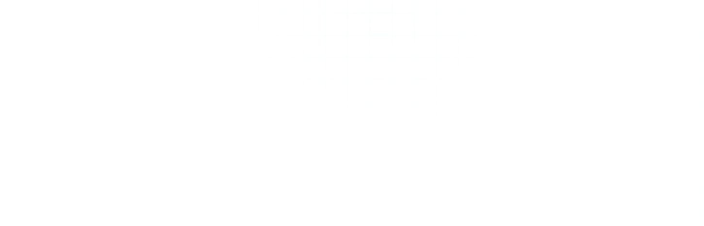
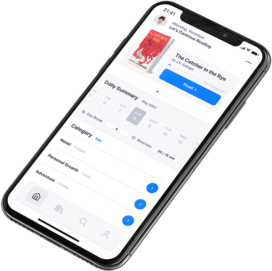
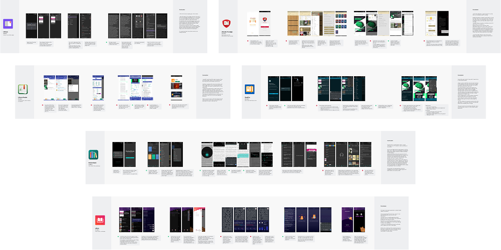
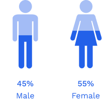
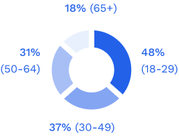
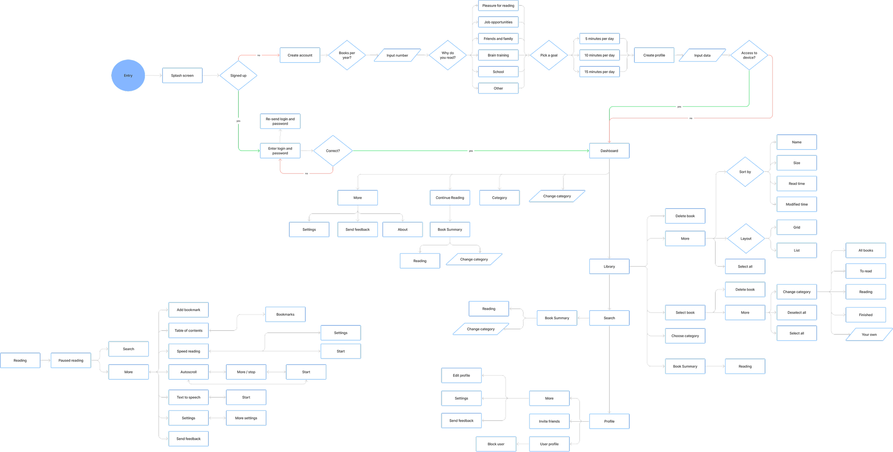
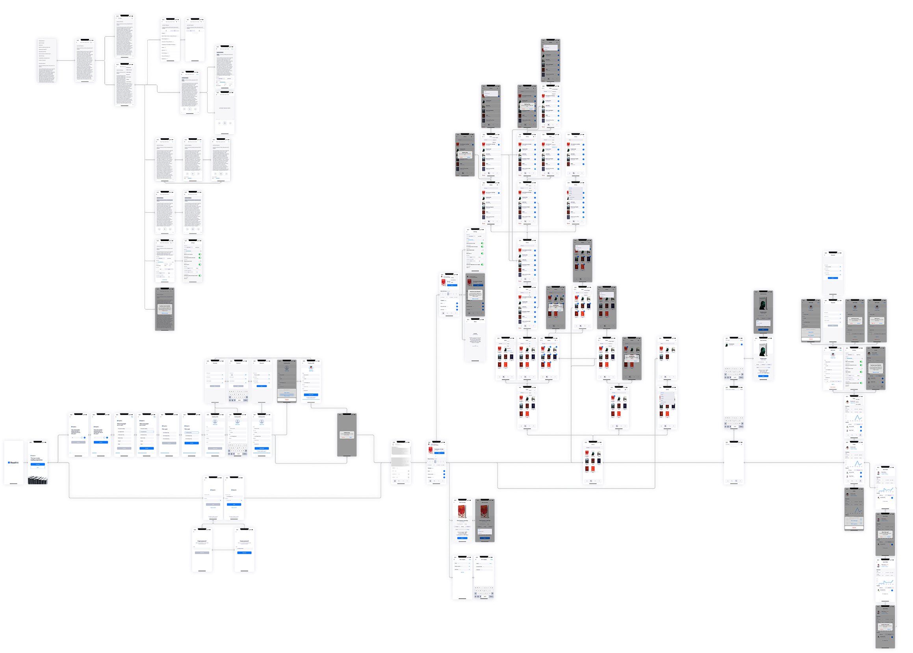

Project Overview
ReadMe is an application that allows the user to read EPUBs on their mobile device. This application is intended to be easy to use with many useful features to make the experience more enjoyable.

2022

ReadMe is an application that allows the user to read EPUBs on their mobile device. This application is intended to be easy to use with many useful features to make the experience more enjoyable.
The ebook market constantly grows each year, more and more people are convinced to read texts in a digital form. The market offers several reading applications. However, using them often proves challenging due to their poor user experience and limited functionality.
My role covered the entire end-to-end design process. I conducted user and market research, identified the most relevant solutions for a digital book reader, defined the product experience, and translated the findings into user flows, wireframes, prototypes, and final interface designs.
0104
The 2021 global book market was valued at 150$ billion. Ebook and audiobook sales had increased by more than 30% since 2020.
Approximately 749,551 new titles were published globally in 2022.
Sources: Worldometer and the 2021 Book Market Report by PublishDrive
To understand the competitive landscape, I reviewed six reading applications and documented their strengths and weaknesses.
I evaluated their visual design, functionality and feedback patterns to identify what worked well and where the experience could be improved.



Sources: Statista, Deloitte Insights and Reddit
0204
Jennifer is a 32-year-old senior project manager who enjoys checking news stories against Snopes, meditation, horse riding and lifelong learning.
Richard is a 26-year-old scientific researcher who enjoys puzzles and educational videos. He approaches reading analytically and looks for books that challenge him.
0304
| Task (I want to…) | Outcome (so that I can…) | Priority |
|---|---|---|
| Delete or edit my books on my reading app | Quickly change mistakes in titles or get rid of something | Medium |
| Track reading time of certain books | I can be aware of how much time I spend on this activity | Medium |
| Personalize aesthetic options | Use interface which is build the way I want | Low |
| Be free from all of the advertisement | I can be assured that nothing will distract me | Low |
| Categorize books based to read/reading/have read | See my bookshelf well organized | Medium |
| Create account where I can upload all the books I have | Have a safe place with all my files | High |
| Define my goals and see progress of them | Stick to my goals and go forward with them | High |
| At the end see my results of a day | Be aware how much do I read | High |
| Scroll the content on the screen with volume buttons | Go into reading flow more naturally | Low |
| Scroll the content up to down | Go into reading flow more naturally | Low |
| See the feature of auto scroll | Go into reading flow more naturally | Medium |
| See the feature of converting text to speech | Change the way of reading when I am tired | Low |
| See the feature for speed reading which read per words | Get through the content of a book much quicker | High |
| Have buttons big enough | I want accidently press the wrong one | High |
| See other users to compare their progress to mine | Motivate myself to read even more | Medium |
| Interact with a interface simple enough to understand | Not get confused while using it | Medium |
| Use application in a offline mode | Enjoy reading without connection to internet | Medium |
| See everything running smooth and fast | Won't be waiting too long for something to load | Low |
| Connect account to Goodreads | Update both of my platforms on the same time | Low |
| Read book description on my application | Understand what am I reading now | High |
| See when was the last time when I read certain books | Pay attention how many books I read | Low |

0404
The final interface combines a focused reading environment with an organized library, clear progress tracking and flexible accessibility options.

Contact
If you are planning a new project or want to improve an existing one, feel free to contact me at:
marcin.zajko97@gmail.com